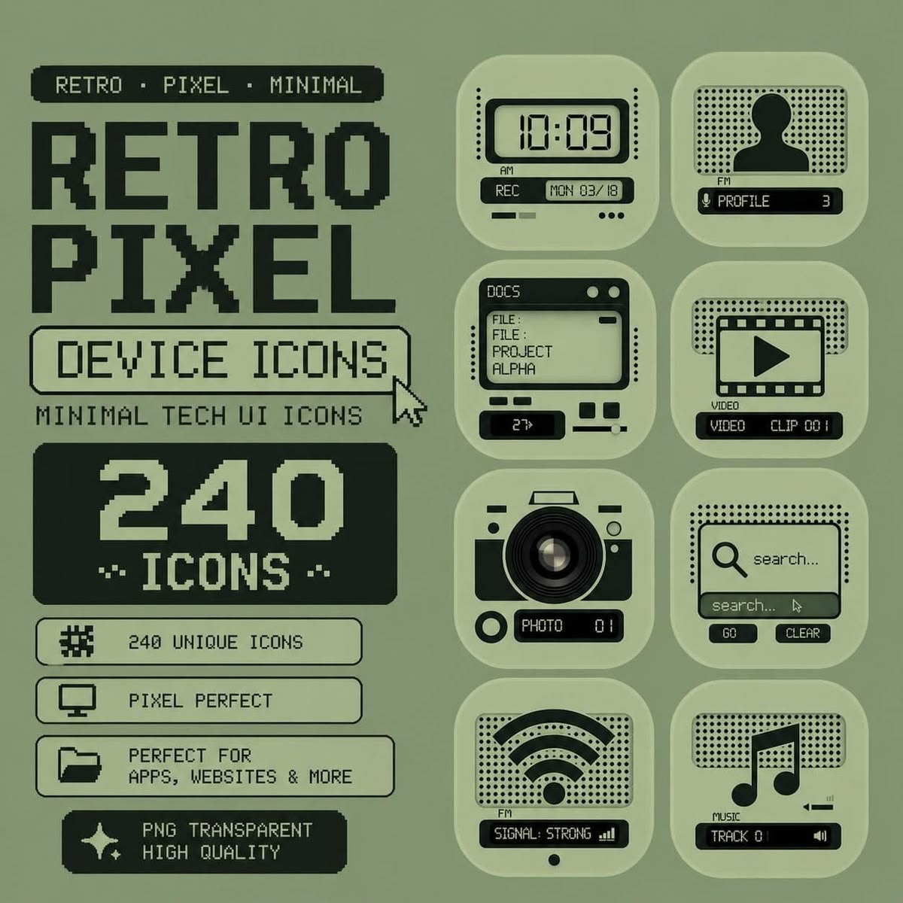
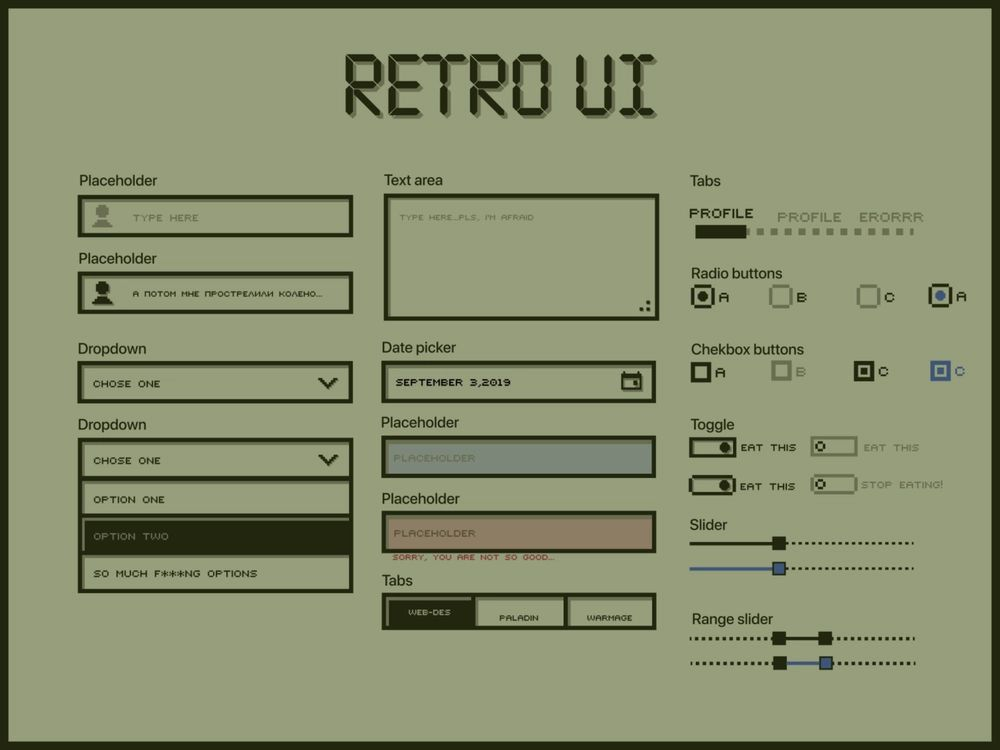
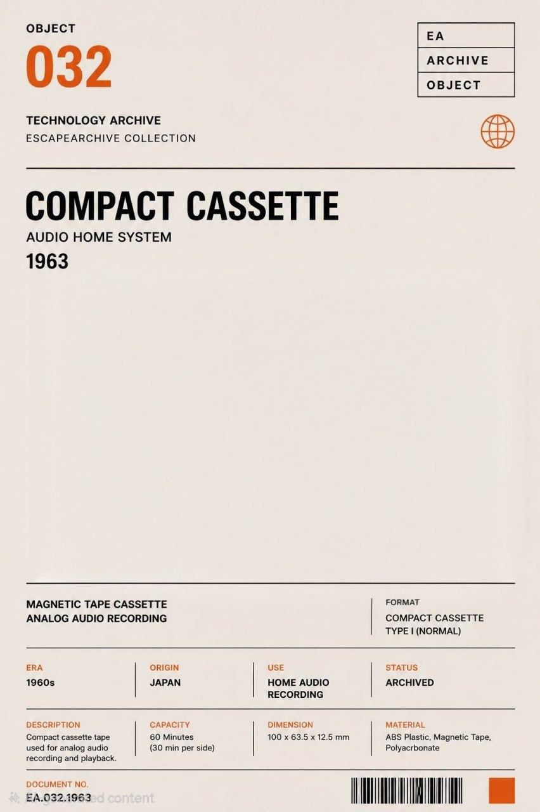
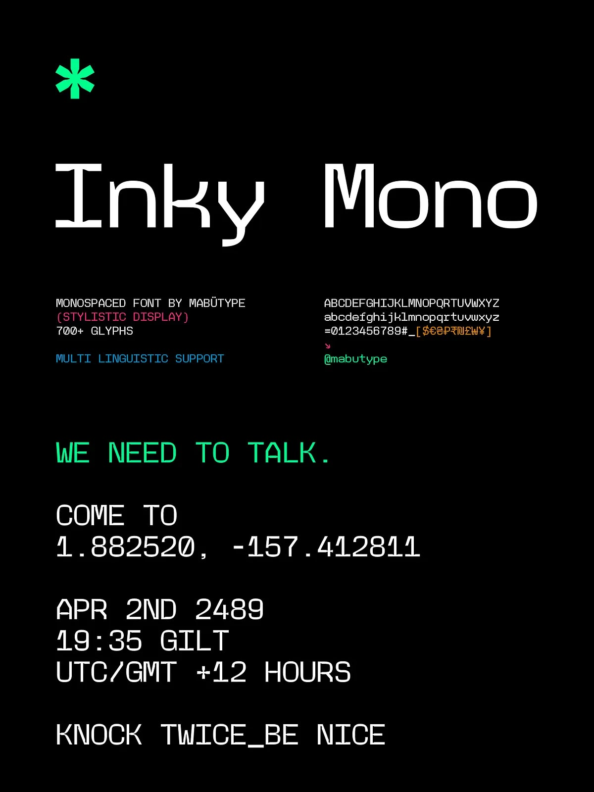
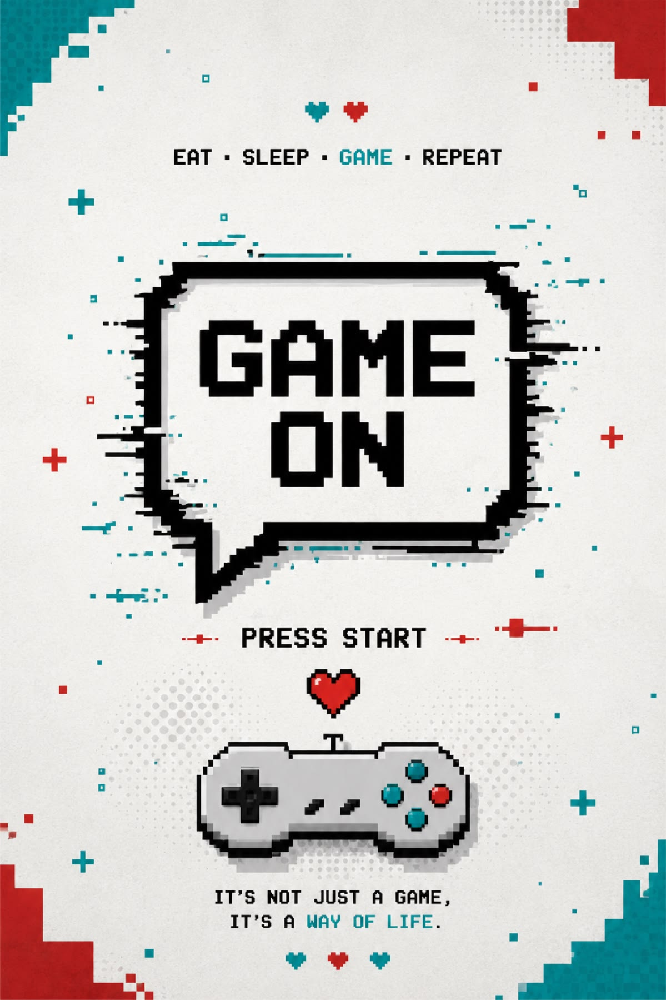

A / ARCADE MODE198X
Arcade archive
Pixel memories, remixed for the web.
Thoughtful web experiences with a little retro soul.
Designed with care. Built to feel alive.
A LITTLE ABOUT THE PLAYER
I build memorable websites that bring clear thinking and playful details together. My inspiration comes from pixel-era games, tactile interfaces, and the tiny moments that make a screen feel personal.
From first sketch to final interaction, I make digital spaces that are useful, distinct, and made to last.
MORE ABOUT ME ↗A FEW THINGS IN PROGRESS
Digital experiments, interface studies
and the craft behind the screen.
Pixel memories, remixed for the web.
A bright little experiment in digital texture.

C / DEVICE UIFriendly controls with a familiar feel.
THE LITTLE DETAILS MATTER
Clear menus, tactile buttons, and tiny moments of feedback. Every interaction should feel easy to understand and satisfying to use.
LET’S BUILD SOMETHING↗
REFERENCE / MENU-UI.JPG
MAINTAKE THE LONG WAY HOME
The best digital work can feel both familiar and surprising. I borrow a little warmth from the past and pair it with a simple, modern web experience.


SMALL MOVEMENTS, BIG PERSONALITY
Thoughtful motion adds a little life while keeping the focus on what matters.